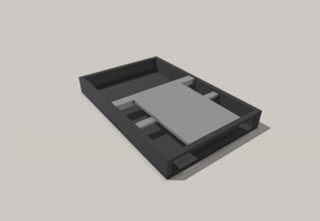
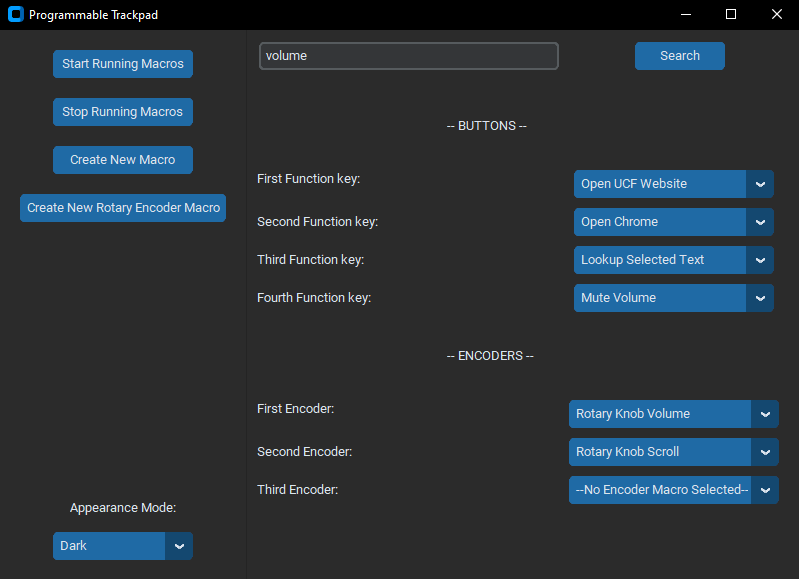
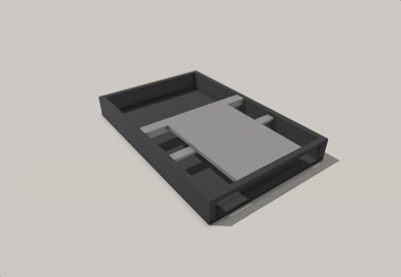
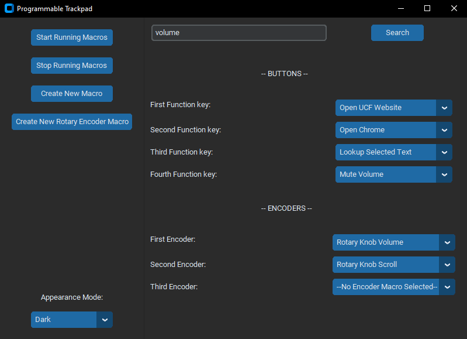
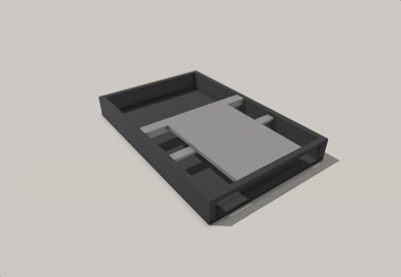
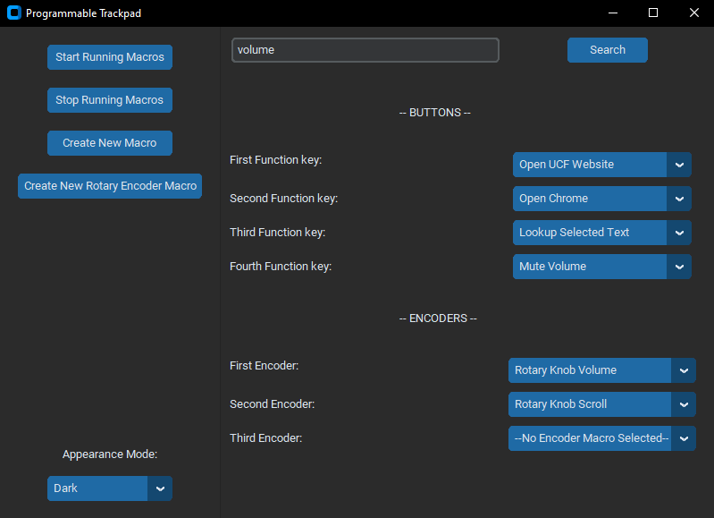

On the market today, there exists a subset of a common computer peripheral meant to boost a basic end-user's productivity. This product is the programmable mouse. The concept is simple; it is a computer mouse that contains several extra buttons that the user can map to any shortcut or command which he/she chooses. The added convenience of these extra buttons means that a user can save valuable time when performing common, repetitive tasks.
Currently, this type of device only exists for the mouse, but not for the trackpad which has millions of users every day. This is where our project comes in. Our purpose in creating the Programmable Trackpad is to bring this type of technology to the trackpad, for users who prefer to use a trackpad over a mouse. Our trackpad will contain a suite of macro keys and rotary encoders, all of which end users can program themselves. With these, trackpad users will be granted the same convenience and functionality as programmable mouse users in a compact and ergonomic package. This device is intended to completely replace the default trackpad on a traditional laptop.
The guiding principle of our development process is this: create a system which, when connected to a PC, can act as a trackpad and a macro keypad. In order to accomplish this, we will create a hardware device with input systems (trackpad and keypad) and a software application which the PC will use to interpret the hardware's output. Additionally, the device's firmware will manage communication between the device and the PC.

